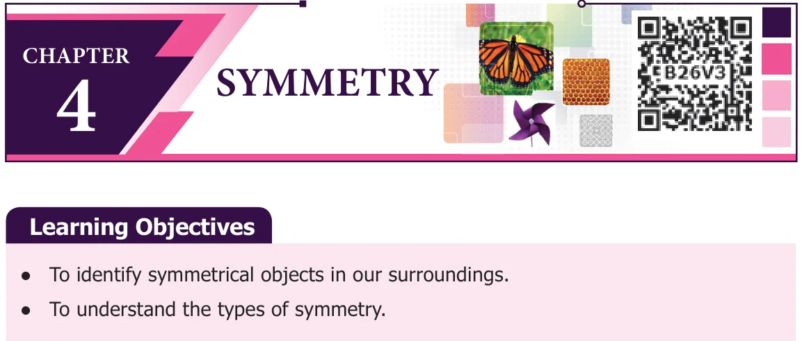
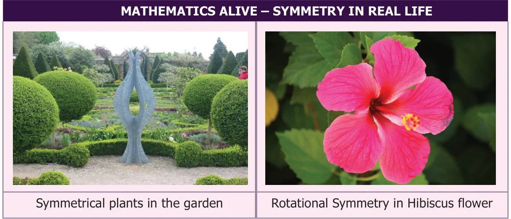

Looking at our surroundings, we see that most of the objects appear with certain beauty. Do you know why these objects look beautiful? The balanced harmony at a perfect ratio makes these objects look beautiful. This kind of organized pattern is called symmetry. Symmetry plays a vital role in many fields of work like making toys, drawings, kolams, household goods, manufacturing vehicles, construction of buildings etc.,
